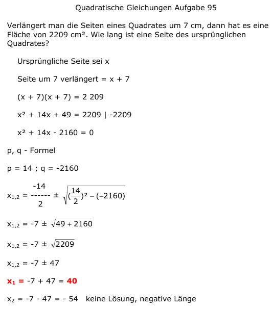

Aufgabe 95 Verlängert man die Seiten eines Quadrates um 7 cm, dann hat es eine Fläche von 2209 cm2. Wie lang ist eine Seite des ursprünglichen Quadrates? Ursprüngliche Seite sei x Seite um 7 verlängert = x + 7 (x + 7)(x + 7) = 2 209 x2 + 14x + 49 = 2209 |-2209 x2 + 14x - 2160 = 0 p, q - Formel p = 14 ; q = -2160  x1,2 = -7 ± 47 x1 = -7 + 47 = 40 x2 = -7 - 47 = -54 keine Lösung, negative Länge